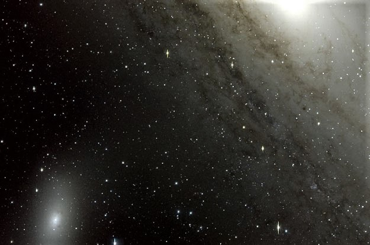
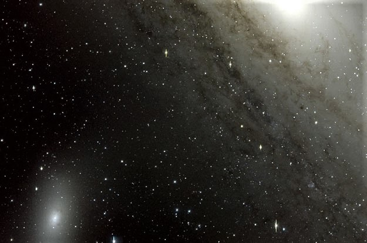
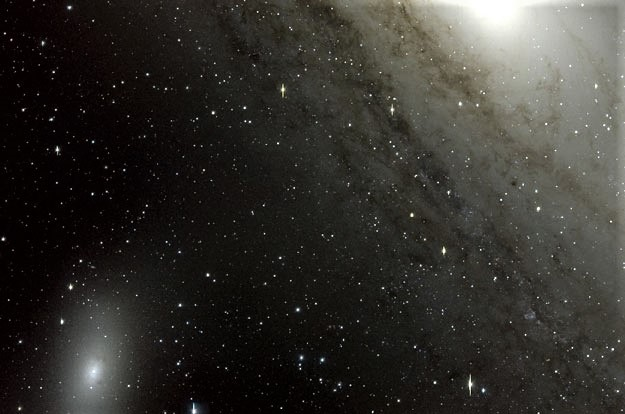
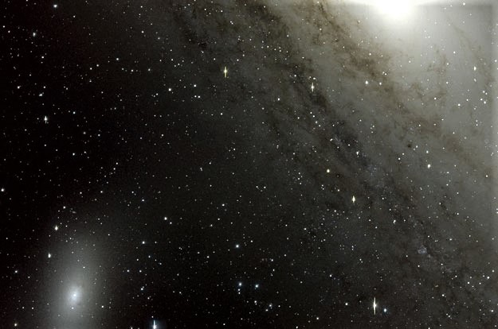

La galaxia elíptica M110 (conocido también como Objeto Messier 110, Messier 110, M110 o NGC 205) es una galaxia elíptica enana orbitando la galaxia de Andrómeda (siendo considerada inicialmente como un miembro de la Nebulosa de Andrómeda). Como tal es un miembro del Grupo Local de galaxias.
Caroline Herschel descubrió de manera independiente esta nebulosa el 27 de agosto de 1783,siendo catalogada por su hermano William Herschel el 5 de octubre de 1784 bajo la designación H V.18. Fue añadida al catálogo Messier en 1966 por Kenneth Glyn Jones.>
Está rodeada por un halo de cúmulos globulares pertenecientes a M 31, de los cuales siete de ellos aparecen dentro del cuerpo de la galaxia (se aprecian como simples estrellas). En el núcleo de la misma se aprecian dos o tres manchas de polvo oscuro.
En su centro se forman nuevas estrellas, habiéndose determinado que esto ha estado ocurriendo desde hace al menos más de 300 millones de años de manera más o menos constante.
En la actualidad es, frecuentemente, considerada una galaxia enana esferoidal, y no elíptica. Sería la primera esferoidal enana conocida, y su masa ha sido estimada entre 3,6 y 15 miles de millones de masas solares.
Aparentemente y, a pesar de su relativo pequeño tamaño, poseería también un importante sistema de 8 cúmulos globulares en el halo que la envuelve.
Su visibilidad durante el año es en verano para el hemisferio sur y en invierno para el hemisferio norte.Para un observador terrestre, M110 puede observarse al noroeste del bulbo de la galaxia de Andrómeda,siendo visto como una pequeña mancha borrosa (en los grandes prismáticos desde un sitio de cielo oscuro) o su estructura en detalle (en un telescopio de tamaño mediano). Se adapta bien a una pequeña cantidad de contaminación lumínica y es considerado un reto suburbano excelente.